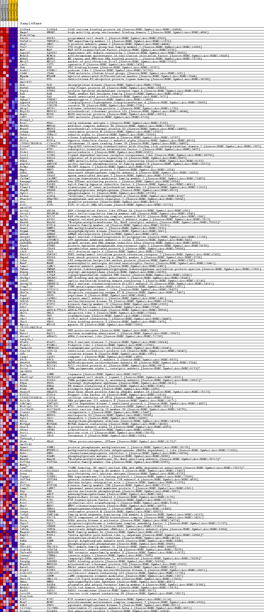
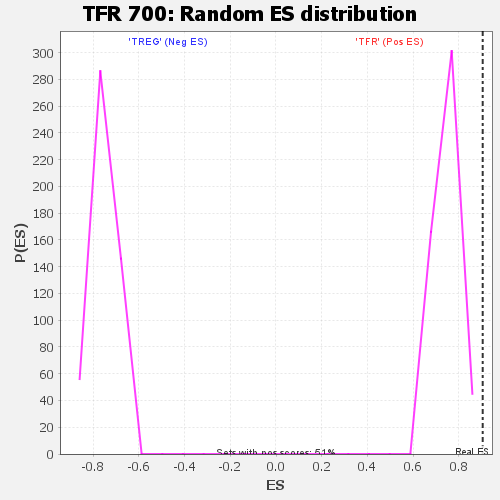

| | | Dataset | Fox_f_tfrvstreg_f_tfrvstreg.tfr_vs_treg_cls.cls#TFR_versus_TREG |
| Phenotype | tfr_vs_treg_cls.cls#TFR_versus_TREG |
| Upregulated in class | TFR |
| GeneSet | TFR 700 |
| Enrichment Score (ES) | 0.9037704 |
| Normalized Enrichment Score (NES) | 1.2375352 |
| Nominal p-value | 0.0 |
| FDR q-value | 0.047669485 |
| FWER p-Value | 0.045 |
Table: GSEA Results Summary
 Fig 1: Enrichment plot: TFR 700
Fig 1: Enrichment plot: TFR 700
Profile of the Running ES Score & Positions of GeneSet Members on the Rank Ordered List
| SYMBOL | TITLE | RANK IN GENE LIST | RANK METRIC SCORE | RUNNING ES | CORE ENRICHMENT | | 1 | S100a4 | na | 12 | 3.865 | 0.0163 | Yes |
| 2 | Hmgn2 | na | 15 | 3.740 | 0.0323 | Yes |
| 3 | Hist1h2ap | na | 19 | 3.567 | 0.0476 | Yes |
| 4 | Pdcd1 | na | 20 | 3.499 | 0.0626 | Yes |
| 5 | Tnfsf11 | na | 22 | 3.451 | 0.0774 | Yes |
| 6 | Gng2 | na | 29 | 3.179 | 0.0909 | Yes |
| 7 | Tox2 | na | 51 | 2.830 | 0.1025 | Yes |
| 8 | Maf | na | 61 | 2.725 | 0.1140 | Yes |
| 9 | Sapcd2 | na | 65 | 2.675 | 0.1254 | Yes |
| 10 | Mcm10 | na | 66 | 2.662 | 0.1369 | Yes |
| 11 | Wdhd1 | na | 80 | 2.540 | 0.1474 | Yes |
| 12 | Mki67 | na | 88 | 2.454 | 0.1578 | Yes |
| 13 | Cst7 | na | 91 | 2.430 | 0.1682 | Yes |
| 14 | Pbk | na | 96 | 2.375 | 0.1783 | Yes |
| 15 | Podnl1 | na | 109 | 2.257 | 0.1877 | Yes |
| 16 | Cd44 | na | 130 | 2.121 | 0.1963 | Yes |
| 17 | Myadm | na | 136 | 2.093 | 0.2052 | Yes |
| 18 | Dtl | na | 138 | 2.081 | 0.2141 | Yes |
| 19 | Gm21972 | na | 141 | 2.071 | 0.2229 | Yes |
| 20 | Dck | na | 147 | 2.049 | 0.2316 | Yes |
| 21 | Rnf43 | na | 161 | 2.010 | 0.2399 | Yes |
| 22 | Ptprs | na | 166 | 1.985 | 0.2483 | Yes |
| 23 | Ran | na | 175 | 1.949 | 0.2565 | Yes |
| 24 | Dap | na | 177 | 1.938 | 0.2648 | Yes |
| 25 | Syngr2 | na | 192 | 1.888 | 0.2725 | Yes |
| 26 | Agpat4 | na | 212 | 1.816 | 0.2798 | Yes |
| 27 | Coro2b | na | 220 | 1.806 | 0.2874 | Yes |
| 28 | Akip1 | na | 234 | 1.770 | 0.2947 | Yes |
| 29 | Mrpl51 | na | 240 | 1.753 | 0.3021 | Yes |
| 30 | Nop9 | na | 248 | 1.740 | 0.3094 | Yes |
| 31 | Cd82 | na | 255 | 1.718 | 0.3166 | Yes |
| 32 | Hivep3_1 | na | 264 | 1.691 | 0.3237 | Yes |
| 33 | Eea1 | na | 266 | 1.689 | 0.3309 | Yes |
| 34 | Med30 | na | 279 | 1.651 | 0.3377 | Yes |
| 35 | Mrps7 | na | 281 | 1.644 | 0.3447 | Yes |
| 36 | Cenpm | na | 285 | 1.631 | 0.3517 | Yes |
| 37 | Tuba1c | na | 310 | 1.586 | 0.3579 | Yes |
| 38 | Rpia | na | 313 | 1.579 | 0.3646 | Yes |
| 39 | Hif1a | na | 316 | 1.573 | 0.3713 | Yes |
| 40 | 1700017B05Rik | na | 321 | 1.562 | 0.3779 | Yes |
| 41 | Cited2 | na | 324 | 1.553 | 0.3845 | Yes |
| 42 | Etf1 | na | 329 | 1.541 | 0.3910 | Yes |
| 43 | Prdx1 | na | 341 | 1.522 | 0.3973 | Yes |
| 44 | Lcorl | na | 353 | 1.500 | 0.4035 | Yes |
| 45 | Rgs16 | na | 364 | 1.491 | 0.4096 | Yes |
| 46 | Pnkd | na | 366 | 1.487 | 0.4160 | Yes |
| 47 | Anp32e | na | 376 | 1.473 | 0.4221 | Yes |
| 48 | Prdm1 | na | 382 | 1.462 | 0.4282 | Yes |
| 49 | Bmp7 | na | 397 | 1.443 | 0.4341 | Yes |
| 50 | Sdhd | na | 404 | 1.423 | 0.4400 | Yes |
| 51 | Spag7 | na | 407 | 1.415 | 0.4460 | Yes |
| 52 | Calhm2 | na | 408 | 1.414 | 0.4521 | Yes |
| 53 | Rangap1 | na | 423 | 1.392 | 0.4577 | Yes |
| 54 | Egln3 | na | 425 | 1.391 | 0.4637 | Yes |
| 55 | Timm13 | na | 427 | 1.388 | 0.4696 | Yes |
| 56 | Phgdh | na | 432 | 1.383 | 0.4755 | Yes |
| 57 | Syt11 | na | 447 | 1.368 | 0.4810 | Yes |
| 58 | Aldoa | na | 450 | 1.364 | 0.4868 | Yes |
| 59 | Phactr2 | na | 454 | 1.360 | 0.4926 | Yes |
| 60 | Grn | na | 456 | 1.358 | 0.4984 | Yes |
| 61 | Pif1 | na | 501 | 1.311 | 0.5029 | Yes |
| 62 | Gm10259 | na | 510 | 1.305 | 0.5083 | Yes |
| 63 | Arl5a | na | 518 | 1.295 | 0.5137 | Yes |
| 64 | Stra13 | na | 530 | 1.277 | 0.5189 | Yes |
| 65 | Bcl7c | na | 533 | 1.274 | 0.5243 | Yes |
| 66 | Ap3s1 | na | 537 | 1.270 | 0.5297 | Yes |
| 67 | Naa50 | na | 540 | 1.263 | 0.5350 | Yes |
| 68 | Kif14 | na | 542 | 1.262 | 0.5404 | Yes |
| 69 | Dnmt1 | na | 553 | 1.252 | 0.5456 | Yes |
| 70 | Dtymk | na | 565 | 1.244 | 0.5506 | Yes |
| 71 | Ahnak | na | 567 | 1.242 | 0.5559 | Yes |
| 72 | Snrpd2 | na | 574 | 1.240 | 0.5611 | Yes |
| 73 | Atp5g3 | na | 583 | 1.227 | 0.5662 | Yes |
| 74 | Gadd45b | na | 592 | 1.218 | 0.5712 | Yes |
| 75 | Ptpn7 | na | 616 | 1.197 | 0.5757 | Yes |
| 76 | Ckap5 | na | 632 | 1.189 | 0.5805 | Yes |
| 77 | Cdc6 | na | 648 | 1.179 | 0.5851 | Yes |
| 78 | Kdelr2 | na | 666 | 1.166 | 0.5897 | Yes |
| 79 | Hspa5 | na | 673 | 1.162 | 0.5945 | Yes |
| 80 | Lrba | na | 692 | 1.145 | 0.5990 | Yes |
| 81 | Manf | na | 705 | 1.137 | 0.6036 | Yes |
| 82 | Lamc1 | na | 708 | 1.136 | 0.6084 | Yes |
| 83 | Ywhae | na | 732 | 1.120 | 0.6126 | Yes |
| 84 | Rnpep | na | 749 | 1.113 | 0.6170 | Yes |
| 85 | Litaf | na | 782 | 1.091 | 0.6209 | Yes |
| 86 | Shcbp1 | na | 791 | 1.088 | 0.6253 | Yes |
| 87 | Cnbd2 | na | 830 | 1.067 | 0.6289 | Yes |
| 88 | Snrnp25 | na | 849 | 1.060 | 0.6330 | Yes |
| 89 | Timp2 | na | 853 | 1.059 | 0.6375 | Yes |
| 90 | Pcyox1l | na | 856 | 1.059 | 0.6420 | Yes |
| 91 | Ube2n | na | 874 | 1.053 | 0.6461 | Yes |
| 92 | Pepd | na | 907 | 1.039 | 0.6497 | Yes |
| 93 | Capns1 | na | 911 | 1.037 | 0.6541 | Yes |
| 94 | Stk35 | na | 929 | 1.027 | 0.6581 | Yes |
| 95 | Kif2c | na | 936 | 1.024 | 0.6623 | Yes |
| 96 | Ddx1 | na | 937 | 1.023 | 0.6667 | Yes |
| 97 | Arpc4 | na | 956 | 1.016 | 0.6706 | Yes |
| 98 | Ubl3 | na | 978 | 1.006 | 0.6744 | Yes |
| 99 | Tkt | na | 981 | 1.004 | 0.6787 | Yes |
| 100 | Cmc2 | na | 992 | 0.999 | 0.6827 | Yes |
| 101 | Ybx3 | na | 995 | 0.998 | 0.6869 | Yes |
| 102 | Myo1e | na | 1020 | 0.989 | 0.6906 | Yes |
| 103 | 2610318N02Rik | na | 1071 | 0.972 | 0.6934 | Yes |
| 104 | Dek | na | 1073 | 0.971 | 0.6976 | Yes |
| 105 | Nacc1 | na | 1115 | 0.949 | 0.7006 | Yes |
| 106 | Abracl | na | 1118 | 0.948 | 0.7046 | Yes |
| 107 | Larp1b_1 | na | 1119 | 0.948 | 0.7087 | Yes |
| 108 | H2afv | na | 1190 | 0.920 | 0.7109 | Yes |
| 109 | Fignl1 | na | 1196 | 0.919 | 0.7147 | Yes |
| 110 | Tmem160 | na | 1197 | 0.918 | 0.7186 | Yes |
| 111 | Ccp110 | na | 1208 | 0.913 | 0.7223 | Yes |
| 112 | Ckb | na | 1226 | 0.908 | 0.7257 | Yes |
| 113 | Casp1 | na | 1227 | 0.907 | 0.7296 | Yes |
| 114 | Rfc5 | na | 1228 | 0.907 | 0.7335 | Yes |
| 115 | Ndufb9 | na | 1255 | 0.896 | 0.7367 | Yes |
| 116 | Bcl2a1b | na | 1271 | 0.891 | 0.7402 | Yes |
| 117 | Pola1 | na | 1279 | 0.888 | 0.7438 | Yes |
| 118 | Gm14005 | na | 1282 | 0.886 | 0.7475 | Yes |
| 119 | Lgmn | na | 1289 | 0.884 | 0.7512 | Yes |
| 120 | Pdcd1lg2 | na | 1298 | 0.881 | 0.7548 | Yes |
| 121 | Pold3 | na | 1345 | 0.864 | 0.7573 | Yes |
| 122 | Fdps | na | 1363 | 0.857 | 0.7605 | Yes |
| 123 | Ehd4 | na | 1364 | 0.857 | 0.7642 | Yes |
| 124 | Blmh | na | 1374 | 0.852 | 0.7677 | Yes |
| 125 | Dnajc9 | na | 1377 | 0.851 | 0.7713 | Yes |
| 126 | Klf10 | na | 1382 | 0.849 | 0.7748 | Yes |
| 127 | C330027C09Rik | na | 1392 | 0.846 | 0.7782 | Yes |
| 128 | Polr3k | na | 1410 | 0.841 | 0.7814 | Yes |
| 129 | Cdk2ap1 | na | 1412 | 0.840 | 0.7850 | Yes |
| 130 | Mid1ip1 | na | 1431 | 0.833 | 0.7881 | Yes |
| 131 | Slc25a39 | na | 1450 | 0.826 | 0.7912 | Yes |
| 132 | Clstn1 | na | 1458 | 0.821 | 0.7945 | Yes |
| 133 | Nup93 | na | 1489 | 0.810 | 0.7972 | Yes |
| 134 | Sgol1 | na | 1502 | 0.807 | 0.8004 | Yes |
| 135 | Dera | na | 1537 | 0.797 | 0.8029 | Yes |
| 136 | Mif4gd | na | 1553 | 0.790 | 0.8059 | Yes |
| 137 | Gna15 | na | 1562 | 0.786 | 0.8091 | Yes |
| 138 | Sfxn1 | na | 1596 | 0.773 | 0.8116 | Yes |
| 139 | Prr11 | na | 1601 | 0.771 | 0.8148 | Yes |
| 140 | Cbx5 | na | 1608 | 0.770 | 0.8179 | Yes |
| 141 | Tnfaip8_1 | na | 1617 | 0.769 | 0.8210 | Yes |
| 142 | Hras | na | 1625 | 0.767 | 0.8241 | Yes |
| 143 | Gm10143 | na | 1639 | 0.761 | 0.8271 | Yes |
| 144 | Ppme1 | na | 1649 | 0.754 | 0.8301 | Yes |
| 145 | Mthfd1l | na | 1654 | 0.752 | 0.8332 | Yes |
| 146 | Rnh1 | na | 1660 | 0.751 | 0.8363 | Yes |
| 147 | Pgam1 | na | 1750 | 0.721 | 0.8371 | Yes |
| 148 | Naa38 | na | 1765 | 0.718 | 0.8398 | Yes |
| 149 | Kif20a | na | 1847 | 0.698 | 0.8407 | Yes |
| 150 | Mafg_1 | na | 1905 | 0.688 | 0.8422 | Yes |
| 151 | Lsm6 | na | 1944 | 0.678 | 0.8442 | Yes |
| 152 | Slc43a3 | na | 1965 | 0.675 | 0.8465 | Yes |
| 153 | Pcna | na | 1971 | 0.673 | 0.8493 | Yes |
| 154 | Topbp1 | na | 1972 | 0.673 | 0.8522 | Yes |
| 155 | Gtf2h4 | na | 2007 | 0.668 | 0.8542 | Yes |
| 156 | Ahi1 | na | 2012 | 0.667 | 0.8569 | Yes |
| 157 | Kif20b | na | 2034 | 0.666 | 0.8593 | Yes |
| 158 | Lamp2 | na | 2072 | 0.656 | 0.8611 | Yes |
| 159 | Pnp | na | 2078 | 0.654 | 0.8638 | Yes |
| 160 | Ahcy | na | 2094 | 0.650 | 0.8662 | Yes |
| 161 | Ebi3 | na | 2112 | 0.646 | 0.8686 | Yes |
| 162 | E2f1 | na | 2125 | 0.644 | 0.8710 | Yes |
| 163 | Ect2 | na | 2133 | 0.641 | 0.8736 | Yes |
| 164 | Nhp2 | na | 2148 | 0.638 | 0.8760 | Yes |
| 165 | Dhrs1 | na | 2171 | 0.633 | 0.8781 | Yes |
| 166 | Cenpn | na | 2243 | 0.619 | 0.8789 | Yes |
| 167 | Itfg3 | na | 2246 | 0.618 | 0.8815 | Yes |
| 168 | Spc25 | na | 2277 | 0.610 | 0.8834 | Yes |
| 169 | Bora | na | 2311 | 0.603 | 0.8851 | Yes |
| 170 | Uqcc2 | na | 2314 | 0.603 | 0.8877 | Yes |
| 171 | Cenph | na | 2320 | 0.602 | 0.8901 | Yes |
| 172 | Idh3a | na | 2323 | 0.601 | 0.8927 | Yes |
| 173 | Maged1 | na | 2339 | 0.599 | 0.8948 | Yes |
| 174 | Espl1 | na | 2366 | 0.592 | 0.8967 | Yes |
| 175 | Gsr | na | 2393 | 0.585 | 0.8986 | Yes |
| 176 | P4hb | na | 2402 | 0.583 | 0.9009 | Yes |
| 177 | Pgp | na | 2406 | 0.583 | 0.9033 | Yes |
| 178 | Tbc1d31 | na | 2568 | 0.562 | 0.9015 | Yes |
| 179 | Ccdc34 | na | 2576 | 0.561 | 0.9038 | Yes |
| 180 | Tnfrsf8 | na | 2887 | 0.542 | 0.8981 | No |
| 181 | Ctnna1 | na | 3033 | 0.533 | 0.8966 | No |
| 182 | Dars2 | na | 3158 | 0.522 | 0.8957 | No |
| 183 | Parpbp | na | 3422 | 0.497 | 0.8910 | No |
| 184 | Mrps30 | na | 3481 | 0.489 | 0.8916 | No |
| 185 | Bard1 | na | 3486 | 0.488 | 0.8936 | No |
| 186 | Ripk3 | na | 3583 | 0.475 | 0.8932 | No |
| 187 | Ccdc167 | na | 3615 | 0.470 | 0.8944 | No |
| 188 | Crem | na | 3768 | 0.454 | 0.8924 | No |
| 189 | Unc119 | na | 3812 | 0.447 | 0.8932 | No |
| 190 | Hmbs | na | 3823 | 0.445 | 0.8949 | No |
| 191 | Paqr4 | na | 4123 | 0.411 | 0.8889 | No |
| 192 | Mesdc1 | na | 4174 | 0.401 | 0.8894 | No |
| 193 | Rad51 | na | 4336 | 0.375 | 0.8868 | No |
| 194 | Lrrc59 | na | 4490 | 0.349 | 0.8844 | No |
| 195 | Hist1h4i | na | 4832 | 0.329 | 0.8770 | No |
| 196 | E2f2 | na | 5390 | 0.244 | 0.8636 | No |
| 197 | Mcm7 | na | 6246 | 0.132 | 0.8421 | No |
| 198 | Pdk3 | na | 6280 | 0.129 | 0.8418 | No |
| 199 | Il12rb1 | na | 33756 | -0.114 | 0.1328 | No |
| 200 | Dlgap5 | na | 33932 | -0.137 | 0.1288 | No |
Table: GSEA details [plain text format]

Fig 2: TFR 700
Blue-Pink O' Gram in the Space of the Analyzed GeneSet

Fig 3: TFR 700: Random ES distribution
Gene set null distribution of ES for TFR 700